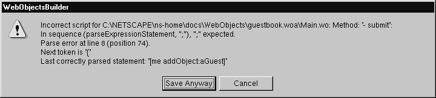
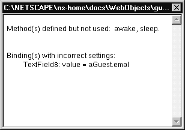

Table of Contents
Table of Contents
 Previous Section
Previous Section
Table of Contents
Previous Section
If you make a syntax error when writing a method, WebObjects Builder displays a message box describing the error when you try to close the script window or to save the component.

As further error checking, you can use the Check Consistency command to verify that the component's elements are bound to variables and methods that actually exist in the script file.
Select the component you want to check.
Choose Tools->Check Consistency.

The Check Consistency command also tells you if it detects a method that is declared but is not bound to anything. This is not necessarily an error---for example, you would never bind awake or sleep to any element in a component, but these two methods are used. They are invoked at the beginning and end of each request-response loop.
 Next Section
Next Section